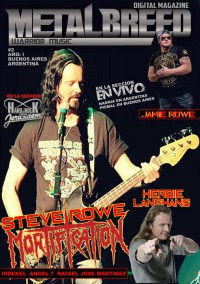

CMnexus
: Contemporary Christian culture, music, and media.
|
|
Steve RoweOn the cover|  | June 2017
Metalbreed | Media coverage:- May 1993 in Heaven's Metal "Mortification's Afflictions and Answers"
- Jul 1994 in Heaven's Metal "The Bloody World of Mortification"
- Win 1996 in The Ultimatum Metal Mag "Dear Mortification Supporters", by Steve Rowe
- Jan 1997 in HM "Prayer Target: Steve Rowe", by Steve Rowe
- Sep 1997 in HM "Hardnews: Steve Rowe", by Doug Van Pelt
- Nov 1997 in HM "Concert Review: Steve Rowe Benefit Gig", by Julian Lee, Scott Berry
- Mar 2002 in HM "Hardnews: Steve Rowe"
- Jan 2003 in HM "Mortification, Steve Rowe", by Doug Van Pelt, Sarah Day
- Aug 2012 in Heaven's Metal "Throwing Down the Gauntlet: Paraplegia Effects the Entire Body", by Steve Rowe
- Jun 2017 in Metalbreed "Un Guerreo Incansable", by Claudia Saavedra
Regular columnsIn Heaven's Metal: "Throwing Down the Gauntlet" Published articles:3 articles credited in The Presbyterian Journal: 1971.3 articles credited in HM: 1995 - 2002.1 article credited in The Ultimatum Metal Mag: 1996.49 articles credited in Heaven's Metal: 2004 - 2013. |
|